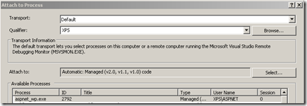

A Proxy for IIS and .NET
- date:
2010-12-07 11:17
- author:
admin
- category:
general, OpenLayers
- tags:
.net, proxy
- slug:
a-proxy-for-iis-and-net
- status:
published
 Due to the same origin
policy any data
from a remote server cannot be (easily) added to a web application on
your own server. This issue also applies to WFS (Web Feature Services)
and
OpenLayers.
There is a Python
script
that can be used to get round this issue, but I preferred to have a
native .NET equivalent.
Due to the same origin
policy any data
from a remote server cannot be (easily) added to a web application on
your own server. This issue also applies to WFS (Web Feature Services)
and
OpenLayers.
There is a Python
script
that can be used to get round this issue, but I preferred to have a
native .NET equivalent.
On the OpenLayers Mailing List Diego Guidi pointed to an opensource .NET proxy. A proxy makes a request to a remote URL, reads the response, and then sends it to the client so it appears all data comes from the same server.
The .NET proxy is written by Paul Johnston, and can be found at http://code.google.com/p/iisproxy/. I made a few minor changes as follows:
increased the byte size for reading responses to resolve this issue
added support for PUT requests
temporarily removed GZIP compression due to invalid responses and a possible bug in .NET
The proxy can be used for any requests and is not limited to just OpenLayers. My source files can be found at http://bitbucket.org/geographika/openlayers/src/bfeab6a9971a/iisproxy/
I’d recommend reading the original project’s README file which goes through compilation and installation, but I’ve added my own notes below.
Compiling the Proxy
To compile the proxy download the source, open the Windows command prompt and run the following commands:
cd C:\PathToIISProxyFolder
build.cmd
The build.cmd file is hardcoded to compile the code for .NET 2.0 (located at C:\WINDOWS\Microsoft.NET\Framework\v2.0.50727\csc), but you should be able to compile it for higher versions of .NET.
Configuring the Proxy
The important thing to remember is that your folder structure on your local server must match the folder structure on your remote server. So if you wish to get requests back from http://mapserver.org/wfsservice/ you need to create a local application at http://geographika.azurewebsites.net/wfsservice.
In XP / IIS 5.1
Windows XP Professional comes with IIS 5.1. This is not installed by default so you may need to go to Control Panel >> Add or Remove Programs >> Add / Remove Windows Components.
Once installed you can create a new folder in C:\Inetpub\wwwroot and name it wfsservice. Copy the IISProxy \bin folder and web.config into this folder.
 Next open the IIS Manager (in Control Panel >> Administrative Tools), navigate to the wfsservice folder, right-click, and select properties. You need to click the Create button to turn this into a web application.
{kind=link}
Once the application is created, click the Configuration button. On the Mappings tab select Add. This step ensures all web requests to your application are sent to the proxy DLL. As the DLL is written for ASP.NET it needs to be run by the aspnet_isapi.dll. Different versions of this DLL may be installed on your machine.
I compiled the proxy for .NET 2 and the DLL I selected is located at C:\WINDOWS\Microsoft.NET\Framework\v2.0.50727\aspnet_isapi.dll.
There is a slight bug in the form which means you may have to click in and out of the Executable box before the OK button becomes active. The extension of .* indicates that any web request (.html, .aspx, .json) should all be handled by the proxy DLL.
I deselected the “Check that file exists” box as I want all requests to be handled remotely even if there is no remote file. I also want the proxy to handle all types of HTTP requests (GET, POST, PUT, DELETE) so selected the “All Verbs” option.
In Windows 7 / IIS7
In Windows 7 the installation process should be simpler when configured using the Integrated Pipeline mode. This article details how using IIS7 Integrated Pipeline mode is more efficient than the wildcard method used above.
Create a folder to match the name of the remote folder, and in IIS Manager convert it to an application. Copy the web.config and \bin folder as before. However the web.config is slightly different and should be similar to below (remember only the root name of the remote server should be used with no backslashes).
<?xml version="1.0" encoding="UTF-8"?>
<configuration>
<appSettings>
<add key="proxyUrl" value="http://mapserver.org" />
</appSettings>
<system.webServer>
<handlers>
<add name="ReverseProxy" verb="*" path="*.*" type="ReverseProxy.ReverseProxy, ReverseProxy" />
</handlers>
</system.webServer>
</configuration>
There has also been an issue in IIS7 of the proxy returning security errors such as - “Request for the permission of type ‘System.Web.AspNetHostingPermission, System..”
The fix for this is to set LoadProfile to True for the application pool - via Dave Burke.
Debugging
If you have issues with timeouts and hanging responses you can debug the proxy code on your own machine by attaching to the ASP.NET process in Visual Studio ?” Debug >> Attach to Process. Set a breakpoint in the code and then trigger a request either in your browser or using Fiddler.
- orphan:
Comments
1. pencho **
thats awesome .Thnx very much man . This rly helps
ReplyAdd Comment